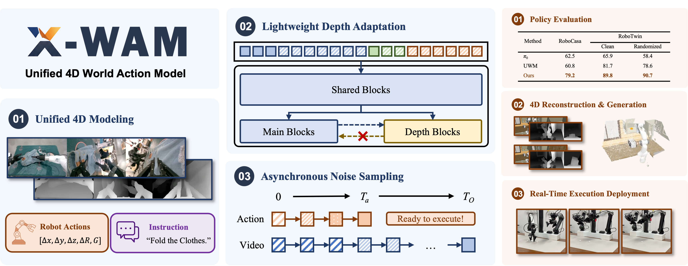
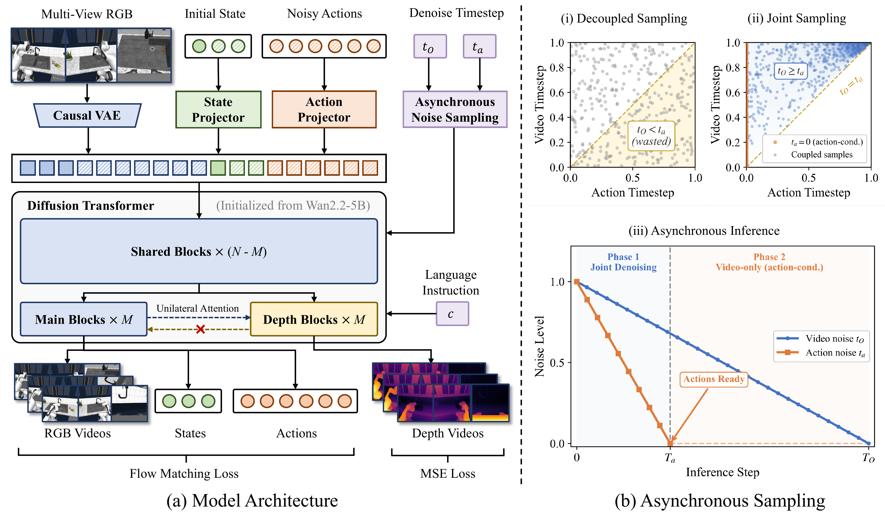

We propose X-WAM, a unified 4D World Action Model that simultaneously targets high-fidelity video generation, 3D spatial reconstruction, and real-time policy execution. To leverage the strong visual priors of pretrained video diffusion models, X-WAM imagines the future world by predicting multi-view RGB-D videos, and obtains spatial information efficiently through a lightweight structural adaptation: replicating the final few blocks of the pretrained Diffusion Transformer into a dedicated depth prediction branch for the reconstruction of future spatial information. Moreover, we propose Asynchronous Noise Sampling (ANS) to jointly optimize generation quality and action decoding efficiency. ANS applies a specialized asynchronous denoising schedule during inference, which rapidly decodes actions with fewer steps to enable efficient real-time execution, while dedicating the full sequence of steps to generate high-fidelity video. Rather than entirely decoupling the timesteps during training, ANS samples from their joint distribution to align with the inference distribution. Pretrained on over 5,800 hours of robotic data, X-WAM achieves 79.2% and 90.7% average success rate on RoboCasa and RoboTwin 2.0 benchmarks, while producing high-fidelity 4D reconstruction and generation surpassing existing methods in both visual and geometric metrics.

X-WAM is built upon a pretrained video diffusion model (Wan2.2-5B) and fine-tuned to jointly denoise multi-view RGB videos, proprioceptive states, and robot actions within a single unified sequence. Two core designs enable simultaneous 4D reconstruction and efficient policy execution:
Lightweight Depth Adaptation. Instead of doubling the sequence length by treating depth as additional tokens, we replicate the final few DiT blocks into a dedicated depth branch that runs in an interleaved fashion with the main RGB branch. The depth branch reads from the main branch via cross-attention but does not affect it (unilateral attention), preserving pretrained visual priors while enabling high-quality spatial reconstruction. During policy inference, this branch can be toggled off to eliminate extra latency.
Asynchronous Noise Sampling (ANS). Videos and actions require vastly different numbers of denoising steps. ANS introduces an asynchronous schedule: actions are decoded in only a few initial steps and immediately dispatched for execution, while video denoising continues for the full sequence to produce high-fidelity outputs. To align training with this inference behavior, we sample video and action noise levels from a coupled joint distribution rather than independently, ensuring the model is trained on configurations it actually encounters at test time.
X-WAM jointly generates multi-view RGB-D videos and reconstructs 3D point clouds at each timestep, enabling high-fidelity 4D reconstruction. Below we show qualitative results of the predicted RGB, depth, and reconstructed point clouds in the RoboCasa simulation environment.
Turn On Microwave
Pick & Place: Counter to Cabinet
Pick & Place: Sink to Counter
Open Drawer
We deploy X-WAM on physical robots to validate real-world performance. The following videos show the model executing various manipulation tasks on real hardware, demonstrating its generalization from simulation to the real world.
All real robot videos are played at 1x speed without any editing or cuts.
White Earphone
Cyan Earphone
Black Earphone
Trial 1
Trial 2
Trial 3
Novel Placements
Unseen Tablecloth
Unseen Distractors
@article{guo2026xwam,
title={Unified 4D World Action Modeling from Video Priors with Asynchronous Denoising},
author={Guo, Jun and Li, Qiwei and Li, Peiyan and Chen, Zilong and Sun, Nan and Su, Yifei and Wang, Heyun and Zhang, Yuan and Li, Xinghang and Liu, Huaping},
journal={arXiv preprint arXiv:2604.26694},
year={2026}
}